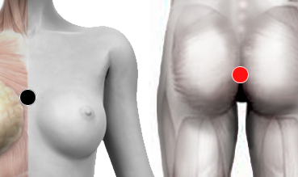

VIH-Sida
Par
timo - recto
riñón - caps. renal

Generalidades:
Síndrome de inmunodeficiencia adquirida. Se caracteriza por un sistema inmune deprimido a causa de la presencia del virus llamado VIH.
Puede cursar asintomático por tiempo indefinido o presentar diversos síntomas desde diversas infecciones en vías respiratorias, gastrointestinales, urogenitales; hasta los típicos síntomas como el sarcoma de kaposi o enfermedades oportunistas diversas (neumonía).
Transmisión
Transmisión sexual, por sangre (transfusión, jeringas infectadas) de madre a hijo.